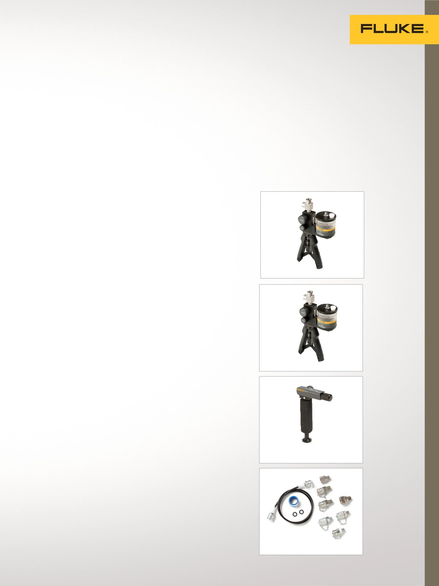

700PTP-1
700LTP-1
700HTP-2
23
Logiciels/Accessoires
Logiciels
Logiciel 750 SW DPC/
TRACK2™
Le logiciel DPC/TRACK2 est une base
de données de gestion d'étalonnage
spécialisée qui peut vous aider à
gérer vos instruments et à répondre
aux exigences de documentation
des programmes de qualité et
réglementations. Avec DPC/TRACK2
et un DPC 754, vous pouvez :
•
Gérer votre stock
d'étiquettes et instruments,
planifier l'étalonnage
•
Créer des procédures spécifiques
aux étiquettes, avec des
instructions et des commentaires
•
Charger ces procédures dans
votre DPC, puis télécharger les
résultats sur votre PC
•
Sélectionner et exécuter des
procédures as found/as left
automatisées sur le terrain, avec
une saisie automatique
des résultats
•
Examiner les historiques
d'étalonnage de vos étiquettes
et instruments et imprimer
des rapports
•
Importer et exporter des données
et procédures d'instruments sous
forme de texte ASCII
•
Importer d'anciennes données
DPC/TRACK
700G/Track
Logiciel facile d'emploi pour la
gestion d'instruments et de
données d'étalonnage.
•
Permet le téléchargement de
données et l'enregistrement
de configurations sur les
manomètres de la série
700G pour un événement
d'enregistrement à distance
•
Configurer le taux de lecture de
l'événement d'enregistrement
•
Télécharger des mesures
enregistrées à distance et
afficher ou exporter des mesures
LogWare
Permet de convertir n'importe quel
afficheur portable monocanal ou
1502A/1504 en un enregistreur de
données en temps réel.
•
Collecte de données en
temps réel
•
Calcule les statistiques et affiche
des graphiques personnalisables
•
Heures de début, heures de fin
et intervalles d'échantillonnage
sélectionnés par l'utilisateur
Logiciel de gestion des équi-
pements de test MET/TEAM
®
Gérer une charge de travail plus
importante en faisant moins d'efforts.
•
Logiciel de gestion des ressources
d’étalonnage sur navigateur
•
Logiciel MET/CAL
®
totalement intégré
•
Base de données
Microsoft SQL Server
•
Fortement personnalisable
•
Automatisation d'e-mail
•
Étalonnage sur site
Accessoires
Pompe de test
hydraulique 700HTP-2
La pompe 700HTP-2 est conçue
pour générer de la pression jusqu'à
10 000 psi/700 bar. Utilisez les
soupapes de décharge réglables
Fluke 700PRV-1 pour limiter la
pression entre 1 360 psi et 5 450
psi. Utilisez le flexible de test
700HTH-1 pour raccorder la pompe
à l'appareil à tester.
Pompe de test
pneumatique 700PTP-1
La pompe portable 700PTP-1 est
conçue pour générer soit du vide
à -11,6 psi/-0,8 bar, soit de la
pression à 600 psi/40 bar.
Pompe de test
basse pression 700LTP-1
Pompe de pression à main conçue
pour générer une dépression jusqu'à
-13 psi/-0,9 bar ou une pression
jusqu'à 100 psi/6,9 bars.
Idéal pour les applications basse
pression exigeant un test basse
pression précis.